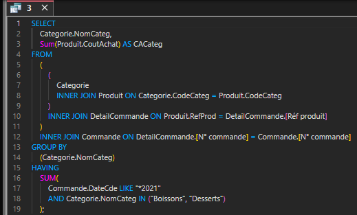
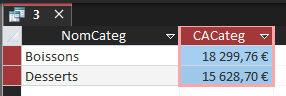

Question 3 — CA annuel desserts ou boissons
Indicateur « santé ». Les captures Access se collent dans les cadres.
Chiffre d’affaires annuel pour les catégories desserts ou boissons
Montant total des ventes, par année, pour les desserts et les boissons.

